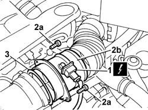

1048A59 TUBAZIONE DA DEBIMETRO A MANICOTTO CORPO FARFALLATO - S.R.
- Path
- Procedures > 10 ENGINE > 1048 ENGINE AIR SUPPLY CIRCUIT > 1048A VACUUM AIR CIRCUIT > 1048A59 TUBAZIONE DA DEBIMETRO A MANICOTTO CORPO FARFALLATO - S.R.
- Kind
- repair procedure (removal / refitting; the operation number is the code)
- Applies to
- engines: 3.0 24V V6; all production periods
- Interactive page
- https://sloeber94.github.io/elrnDB-fUlss/en/#/179007008
Applies to: engines: 3.0 24V V6; all production periods
 Removing
Removing
 Refitting
RefittingOp. 5010B18 CLIMATE CONTROL UNIT AIR INTAKE - R.R.
Op. 1048A47 SLEEVE FROM RIGID PIPE TO THROTTLE BODY - R R
- Disconnect the negative battery terminal.
Description | Connector | |
|---|---|---|
. | Battery | A001B |
1. Disconnect the electrical connection from the intake air temperature sensor.
Description | Connector | |
|---|---|---|
1 | Air temperature sensor | K042 |
2. Undo the fixing bolts (2a) and remove the rigid pipe (2b) between the air filter and the intake manifold.
3. Remove the gasket.

Applies to: engines: 3.0 24V V6; all production periods
Refitting
Removing- Refit a new gasket in the housing on the rigid pipe.
- Position the rigid pipe between the air filter and the intake manifold and tighten the fixing bolts.
- Connect the electrical connection to the intake air temperature sensor.
Description | Connector | |
|---|---|---|
. | Air temperature sensor | K042 |
- Connect the negative battery terminal.
Description | Connector | |
|---|---|---|
. | Battery | A001B |
Topics linked from this page (2)
- 1048A47 SLEEVE FROM RIGID PIPE TO THROTTLE BODY - R R
- 5010B18 CLIMATE CONTROL UNIT AIR INTAKE - R.R.
Topics that link to this page (6)
- 1016A34 RIGHT-HAND CAM COVER - R + R AND REPLACE GASKET
- 1036C39 TIMING VARIATOR ON CYLINDER HEAD INTAKE CAMSHAFT - R R
- 1056B62 L/H AND R/H FUEL PIPE ASSEMBLY - WITH INJECTORS - R + R
- 1056B67 R/H FUEL MANIFOLD PIPE, WITH INJECTORS - R + R
- 1056B70 INJECTOR (ONE) - R + R WITH FUEL MANIFOLD PIPE REMOVED - INCLUDES SEAL REPLACEMNT
- 1056B90 SYSTEM CABLE BUNDLE - R + R